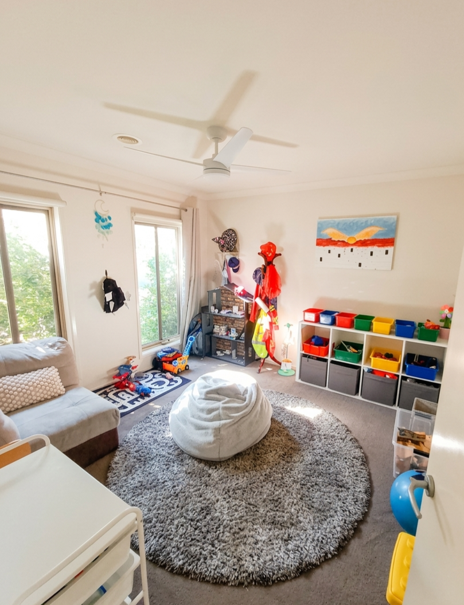
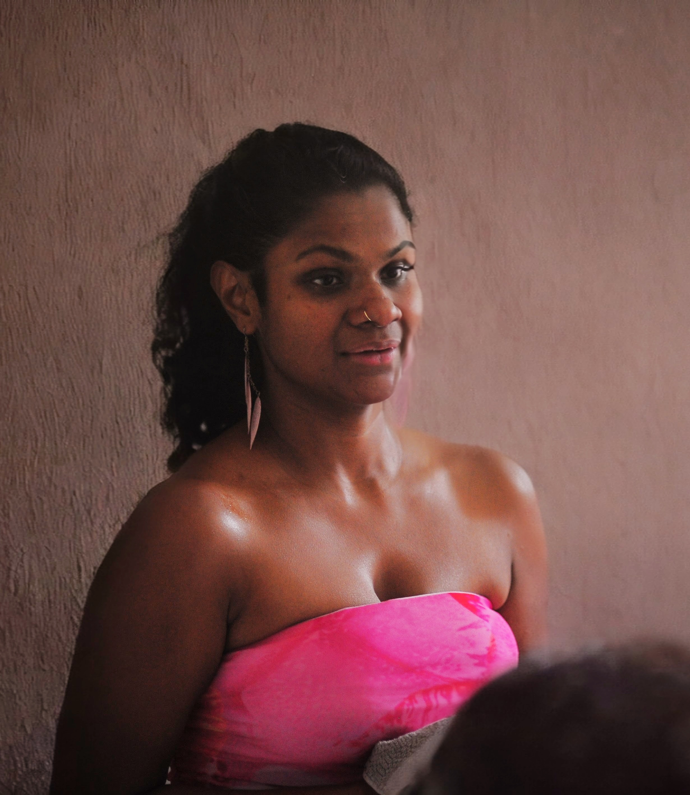

"The curious paradox is that when I accept myself just as I am, then I can change."
— Carl Rogers
Child-Centred Play Therapy in Pakenham for children aged 3–10.

At Sunny Nook, and as with all play therapists, I believe that play is a child's natural language and toys are their words.
Child-Centred Play Therapy (CCPT) is a specialised, evidence-based therapeutic intervention for children aged 3 to 10 (and beyond if developmentally appropriate). Unlike traditional approaches which may ask children to articulate complex emotions they may not yet have the vocabulary for, CCPT meets them where they are.
In the playroom, I provide a safe, non-judgmental environment where your child leads the way. Guided by the philosophies of Virginia Axline and Carl Rogers, I rely on the child's innate "growth force" — their natural drive to heal and self-actualise. By playing out their experiences, children process their world, develop problem-solving skills, and gain a sense of mastery over their lives.
View Evidence-Based Research →"The child is the one who knows what is bothering him, and it is the child who must discover the way to handle his problems."
— Virginia AxlineHelping children process "big worries" and find a sense of inner calm.
Teaching children how to identify, express, and manage intense feelings like anger or sadness.
Improving self-control, reducing impulsivity, and enhancing how they relate to peers and family.
A safe space to process big changes — divorce, grief, moving schools, or adjusting to a new country.
Building a strong sense of "I can" by allowing the child to lead their own therapeutic journey.

I believe every child has the ability to heal and thrive — they just need the right space to do it.
As a former primary school teacher and a mum to a child with severe anxiety, I've spent years watching children navigate the world from both a professional and a deeply personal perspective. I know firsthand that when children struggle with "big feelings" or difficult behaviours, they need a language to express what's happening inside.
Returning to my psychology studies later in life was driven by my desire to support children's emotional needs as they navigate the systems that serve them. This journey led me to Child-Centred Play Therapy — a modality that helps young children not only heal from their challenges but truly self-actualise.
"Healing happens when a child feels safe enough to be exactly who they are."
Please get in touch to discuss fee options, as these depend on your circumstances. We currently accept self-managed NDIS funded clients and private paying clients.
CCPT is most effective for children aged 3 to 10, though it can be adapted for older children where developmentally appropriate. Feel free to reach out if you're unsure.
Sessions are typically 30–45 minutes in the playroom. Parents and I will meet for an update every four to six weeks.
Every child is different. Research suggests 15–25 consistent weekly sessions. We'll review progress together as we go.
Children attend the playroom on their own — this gives them the freedom to lead and express themselves. Parents are welcome to wait in our waiting room, where there's a range of books to peruse.
Please get in touch to discuss rebate options, as these depend on your circumstances and referral pathway.
I'd love to hear from you. Reach out and we can find a time to chat.
This form is for general inquiries only and is not a secure clinical platform. Please don't share highly sensitive clinical details here.
Please use the Halaxy booking system to manage your appointments.
Book via Halaxy →*Your data is stored in a secure, encrypted system that complies with Australian data residency requirements.